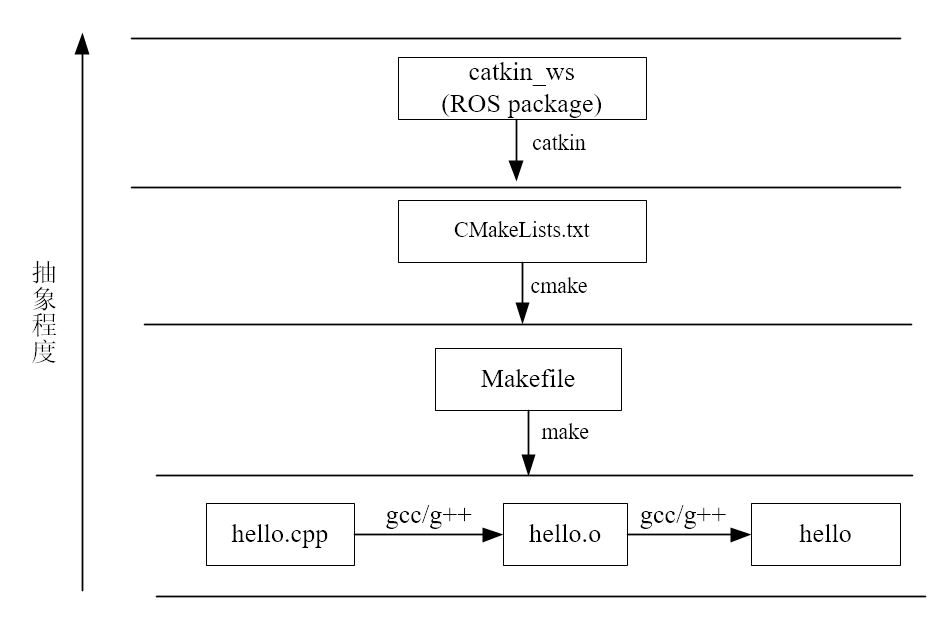

catkin编译系统
介绍了ROS的工程结构，也就是ROS的文件系统结构。要学会建立一个ROS工程，首先要认识一个ROS工程，了解它的组织架构，从根本上熟悉ROS项目的组织形式，了解各个文件的功能和作用，才能正确的进行开发和编程。
1. 概念
对于源代码包，我们只有编译完成之后，才能在系统上运行。而Linux下的编译器有gcc、g++，随着源文件的增加，直接用gcc/g++命令的方式显得效率低下，人们开始用Makefile来进行编译。然而随着工程体量的增大，Makefile也不能满足需求，于是便出现了Cmake工具。CMake是对make工具的生成器，是更高层的工具，它简化了编译构建过程，能够管理大型项目，具有良好的可扩展性。对于ROS这样大体量的平台来说，采用的就是CMake，并且ROS对CMake进行了扩展，于是便有了Catkin编译系统。 
**早期的ROS编译系统是rosbuild**，但随着ROS的不断发展，rosbuild逐渐暴露出许多缺点，不能很好满足系统需要。**在Groovy版本面世后，Catkin作为rosbuild的替代品被正式投入使用。**Catkin操作更加简化且工作效率更高，可移植性更好，而且支持交叉编译和更加合理的功能包分配。目前的ROS同时支持着rosbuild和Catkin两种编译系统，但ROS的核心软件包也已经全部转换为Catkin。**rosbuild已经被逐步淘汰，所以建议初学者直接上手Catkin。**2. catkin特点
- Catkin是基于CMake的编译构建系统，具有以下特点：
- Catkin沿用了包管理的传统像 find_package()基础结构,pkg-config
- 扩展了CMake，例如
- 软件包编译后无需安装就可使用
- 自动生成find_package()代码，pkg-config文件
- 解决了多个软件包构建顺序问题
- 一个Catkin的软件包（package）必须要包括两个文件：
- package.xml : 包括了package的描述信息
- name, description, version, maintainer(s), license
- opt. authors, url's, dependencies, plugins, etc...
- CMakeLists.txt: 构建package所需的CMake文件
- 调用Catkin的函数/宏
- 解析package.xml
- 找到其他依赖的catkin软件包
- 将本软件包添加到环境变量
- package.xml : 包括了package的描述信息
3. catkin工作原理
catkin编译的工作流程如下：
- 首先在工作空间catkin_ws/src/下递归的查找其中每一个ROS的package。
- package中会有package.xml和CMakeLists.txt文件，Catkin(CMake)编译系统依据CMakeLists.txt文件,从而生成makefiles(放在catkin_ws/build/)。
- 然后make刚刚生成的makefiles等文件，编译链接生成可执行文件(放在catkin_ws/devel)。
也就是说，Catkin就是将cmake与make指令做了一个封装从而完成整个编译过程的工具。
catkin有比较突出的优点，主要是：
- 操作更加简单
- 一次配置，多次使用
- 跨依赖项目编译
4. catkin编译方法
- 要用catkin编译一个工程或软件包，只需要用catkin_make指令。一般当我们写完代码，执行一次catkin_make进行编译,就会自动完成编译和链接过程，构建生成目标文件。编译的一般性流程如下。在第一篇 学习资料源码下载我们编译ROS-Academy-for-Beginners教学包就是这样的步骤。
注：这里的catkin_ws替换为tutorial_ws。前面已经说明过了，tutorial_ws或者catkin_ws只是文件夹名称，名称可以随意cd ~/catkin_ws #进入到工作空间,catkin_make必须在工作空间的顶层目录下执行 catkin_make #开始编译 source ~/catkin_ws/devel/setup.bash #刷新坏境
注: 使用catkin编译之前，必须回到工作空间的顶层目录，catkin_make在其他路径下编译不会成功。编译完成后，如果有新的目标文件产生，那么一般紧跟着要用source刷新一下环境，使得系统能够找到刚才编译生成的ROS可执行文件。这个细节比较容易遗漏，致使后面出现可执行文件无法打开等错误
- catkin_make命令也有一些可选参数，例如：
catkin_make [args]-h, --help 帮助信息 -C DIRECTORY, --directory DIRECTORY 工作空间的路径 (默认为 '.') --source SOURCE src的路径 (默认为'workspace_base/src') --build BUILD build的路径 (默认为'workspace_base/build') --use-ninja 用ninja取代make --use-nmake 用nmake取'make --force-cmake 强制cmake，即使已经cmake过 --no-color 禁止彩色输出(只对catkin_make和CMake生效) --pkg PKG [PKG ...] 只对某个PKG进行make --only-pkg-with-deps ONLY_PKG_WITH_DEPS [ONLY_PKG_WITH_DEPS ...] 将指定的package列入白名单 CATKIN_WHITELIST_PACKAGES， 之编译白名单里的package。该环境变量存在于 CMakeCache.txt。 --cmake-args [CMAKE_ARGS [CMAKE_ARGS ...]] 传给CMake的参数 --make-args [MAKE_ARGS [MAKE_ARGS ...]] 传给Make的参数 --override-build-tool-check 用来覆盖由于不同编译工具产生的错误